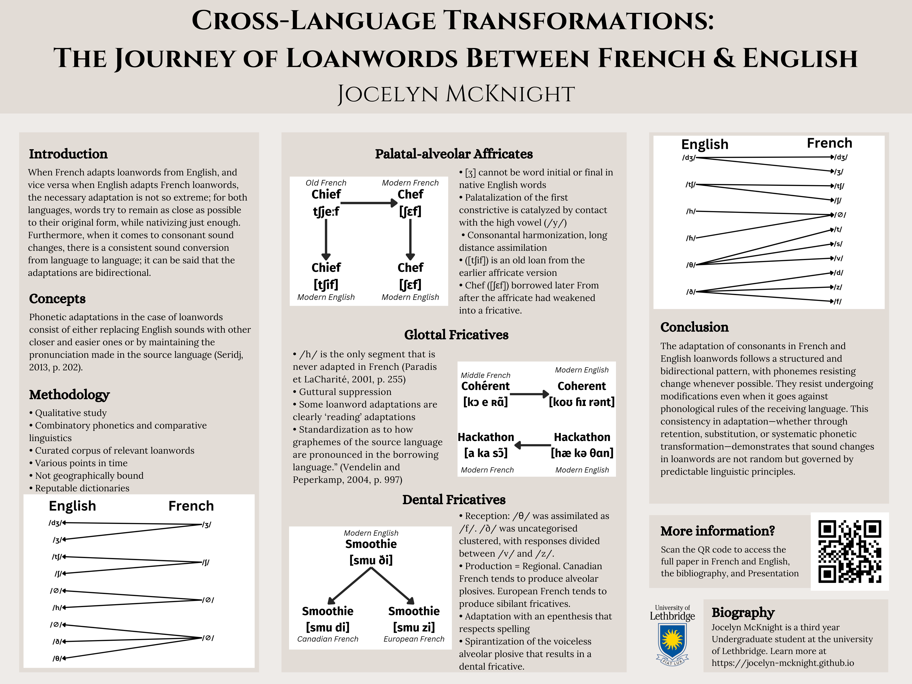
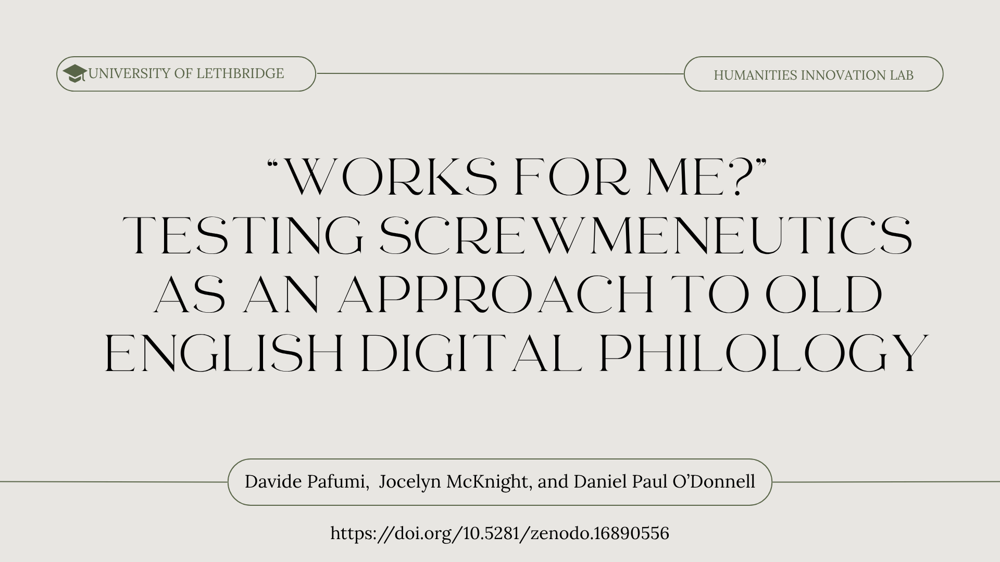

Environmental Conference of the Humanities
Environmental Conference of the Humanities

Example Bio statement 1: Natasha Rebry Coulthard is an instructor at the University of Lethbridge, where her teaching and research focus on rhetoric, the Gothic, and posthumanism. She has published on topics ranging from late-Victorian Gothic to Stephen King’s ghostly muse. Her recently published monograph, Gothic Mētis, explores Gothic alongside and through the concept of mētis: an ancient cunning associated with tricksters, nonhumans, shapeshifting and subversion.
Example Bio Statement 2: Jocelyn McKnight is an undergraduate student currently pursuing a BA, majoring in English Language Arts, with a French minor at the University of Lethbridge. Her honour's thesis is focused on semantic changes in war and violence vocabulary in Tok Pisin, a mixed English and Indigenous language in Papua New Guinea. Jocelyn is involved in the Visionary Cross Project, works as an undergraduate TA in the Linguistics and Modern Language Department, and serves as an instructional designer for online secondary schooling in Alberta. Her academic interests revolve around Old English philology, linguistics related to endangered Languages, and Digital Humanities.

Here are some helpful tips and tricks for all your conference essentials—from writing bio statements to creating posters and presentations. If you need help or feedback on your bio, poster, or presentation, feel free to reach out to us!

Example Poster
Example Presentation (title page)
